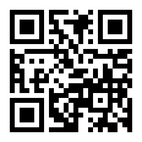

喜马拉雅去广告 · YG 定制
Loon 插件 · 38 条域名拦截 + 3 条接口复写

用 iPhone 相机扫码，或直接在 Safari 打开
http://192.168.31.123:8000/
导入后还需两步
- 在 Loon「配置 → 插件」里确认该插件的开关已打开
- 安装并信任 MITM 证书：
设置 → 通用 → VPN与设备管理 → 安装描述文件
设置 → 通用 → 关于本机 → 证书信任设置 → 打开 Loon 开关
第 1 步完成后域名拦截即生效；第 2 步用于接口级复写。
Mac 端已验证 ✓
adse / ad / adx / adbehavior / dns / adbs / adwbs / adsehera.ximalaya.com
以及穿山甲域名均已 DNS 黑洞到 127.0.0.1，规则实际生效。